In the last couple of months I have been to Wanaka 3 times. It is a very lovely place. Trip 1: Went to Mt Aspiring national park to see the Blue Pools and Fantail Falls. Had to stop for pictures at Lake Hawea, which was the most gorgeous lake, especially with the late afternoon sun. The area was very lovely, the pools were very cold and had alot of sandflies so I was not happy to stay for a long time there. People were swimming but Lake Tekapo is cold enough for me and I think these pools are closer to their glacier. The next day we went to a lovely brunch place which was recommended to me. Was delicious and very healthy.
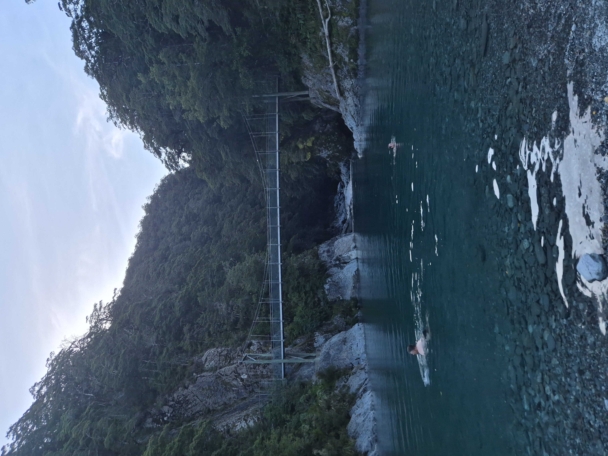
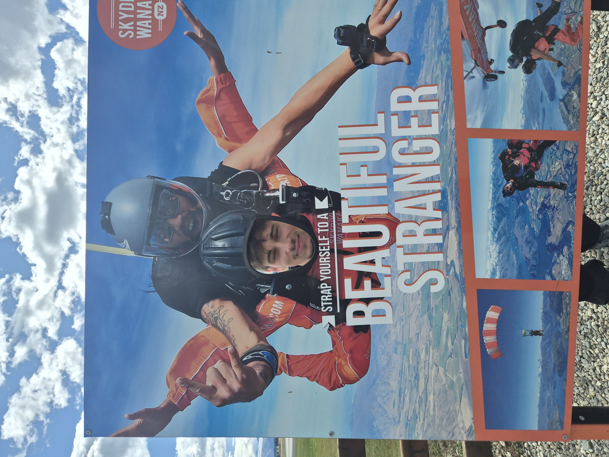
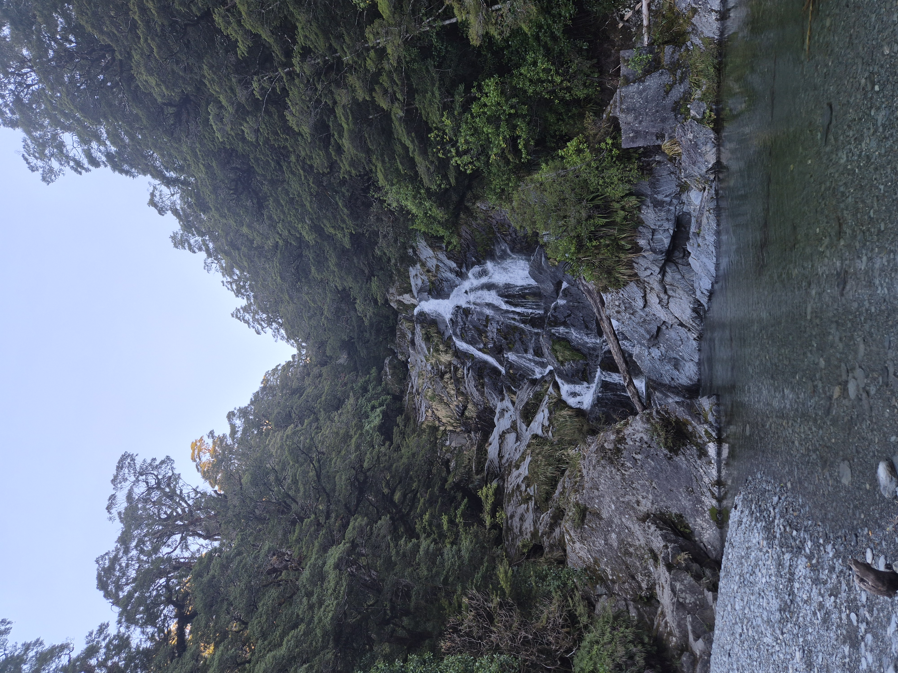
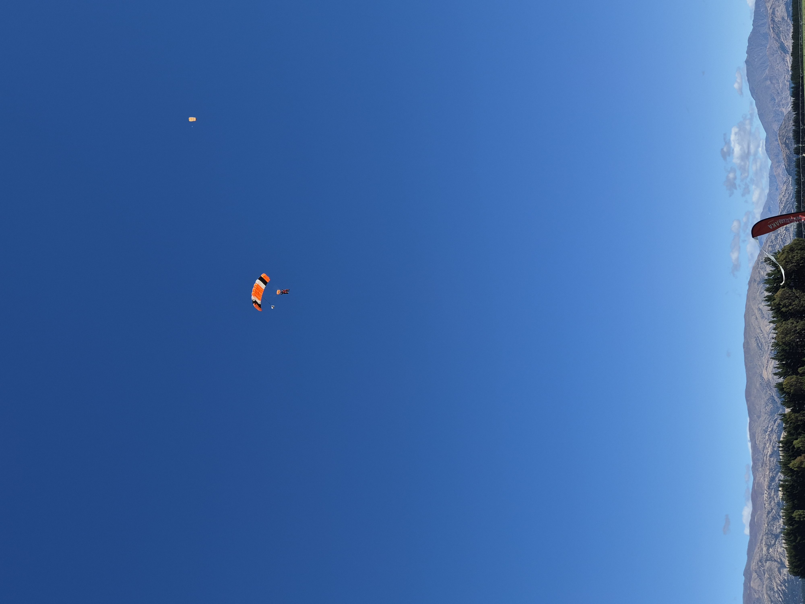
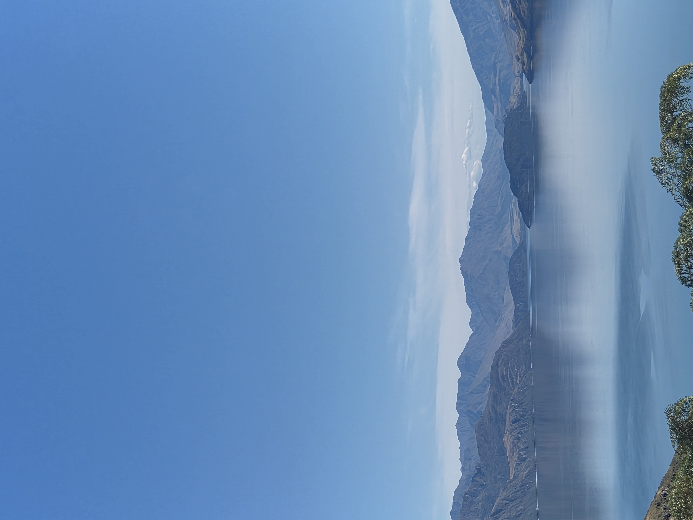
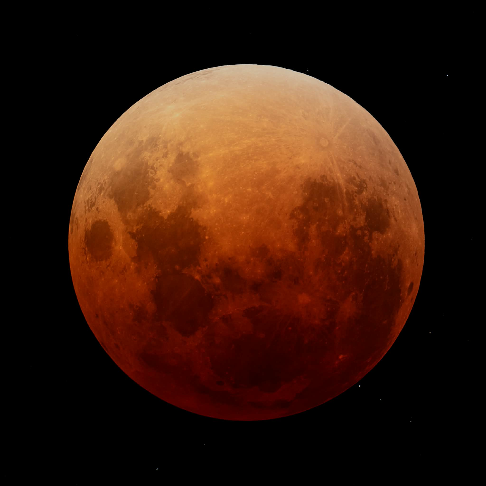
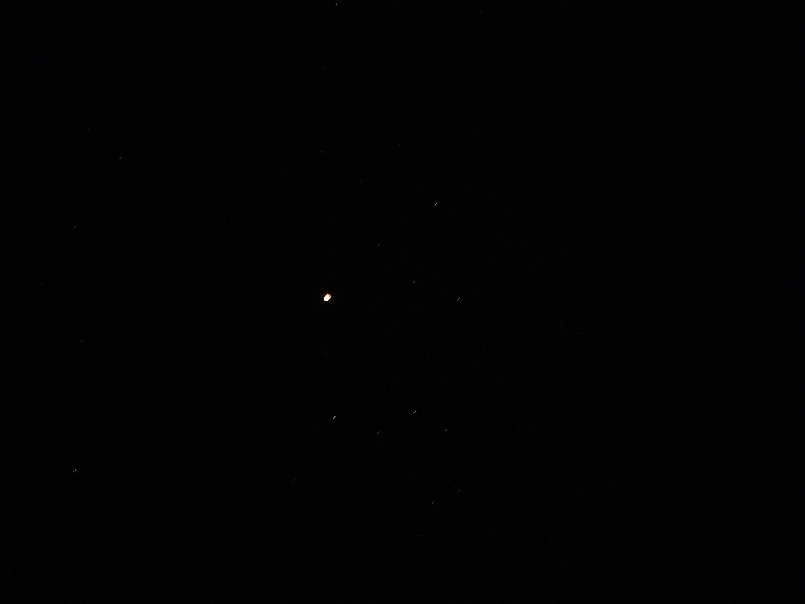
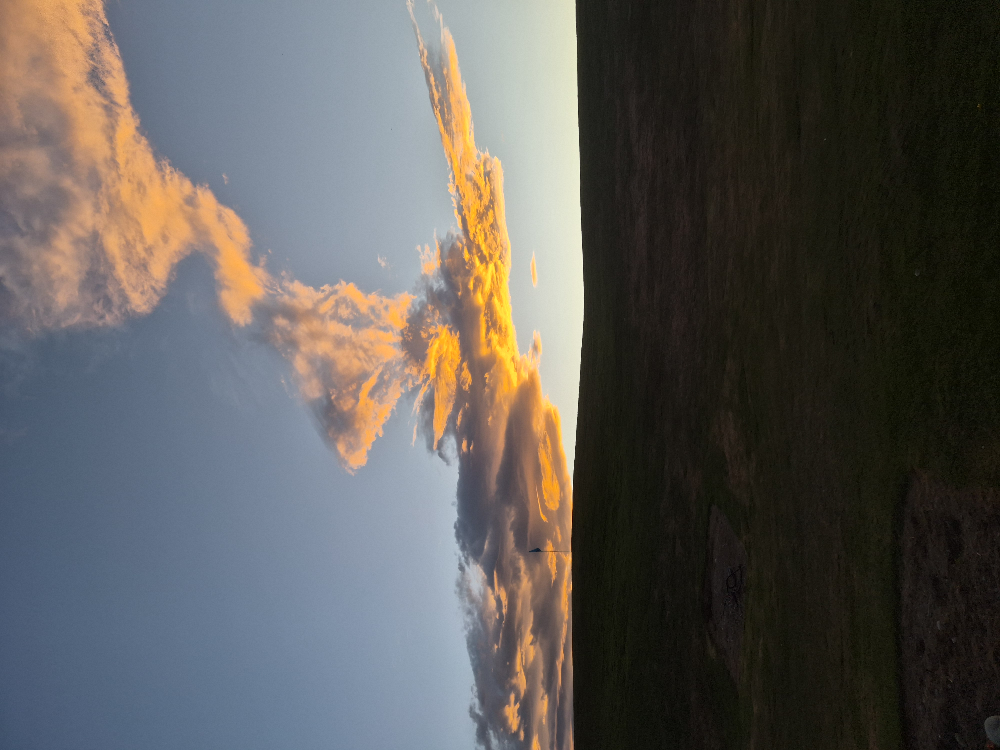
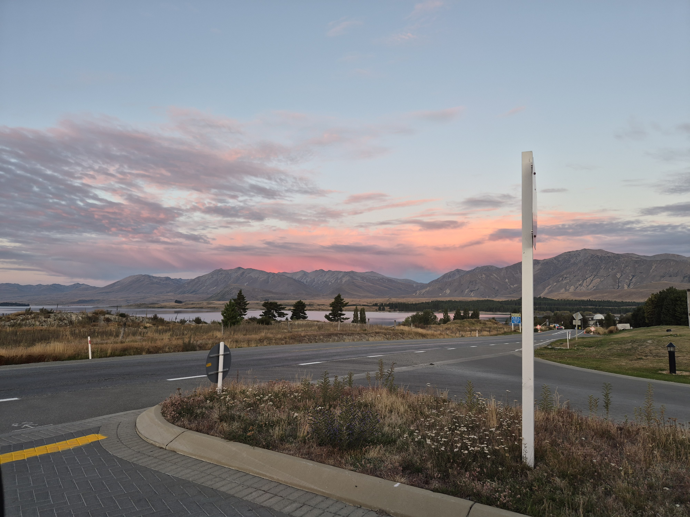
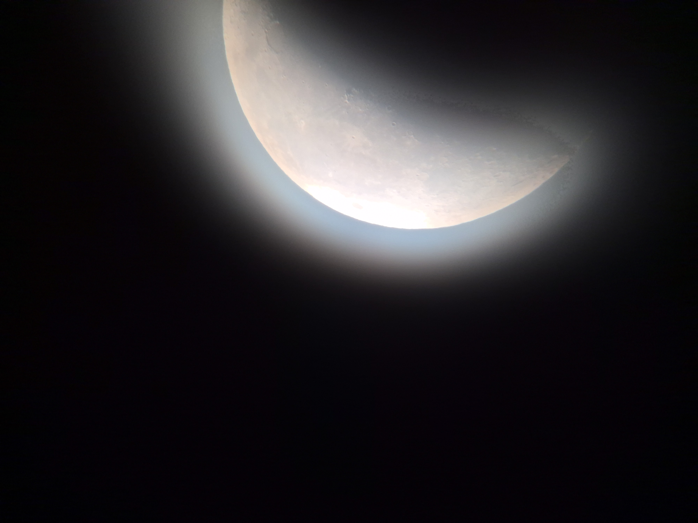
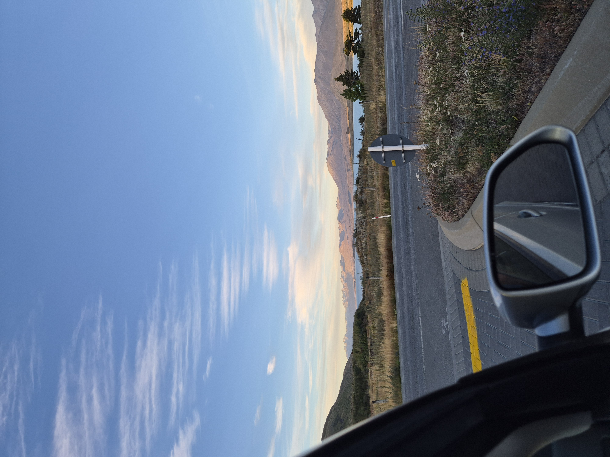
Trip 2: Jacob had a skydive booked in Wanaka so we set off with some friends from work to all watch. When we were almost there he got a text to sya the skydive was cancelled due to the wind. Instead we got a picture of him pretending to skydive. We all went to some food trucks for lunch and then had bubble tea and headed home for work. On the way back my car got hit by a flying rock and made a crack. I was planning to get it fixed but I will wait until later in case I get hit again and get more cracks so I don't have to pay for a new windshield twice. (I recently did get hit with a large rock but no crack this itme!)
Trip 3: This time we were much more prepared for the weather and gave the trip 2 days in case the first was cancelled. Luckily the day was incredibly clear and the air was veyr still. It was however a long wait for the jump as they had large groups and took we had to wait for the first plane to go and then come back for more people. When the plane left I got escorted to the landing zone in the bus. The driver was very helpful and even made sure he knew which jumper Jacob was so I knew which dot in the sky to look at. It was very funny as they all start as these little white dots before the parachute goes off. I got a picture of his parachute from far away. When he landed the driver took me out so we could stand right in front of the landing point but said I had stand right next to him as they come in for landing super fast. We spent the evening in Queenstown where I was really tempted to find a pair of Uggs but I think I want to save money. We camped 30 mins out of the town and saw the Southern lights!
Sometime inbetween these trips we also managed ot see a lunar eclipse. It was very cool as the moon was full and the sky was very bright, but as the shadow came over the moon the moon turned red and the sky went dark again. We could then see the milky way again. A very cool picture of the red moon through the telescope - with stars next to it! I tried to see if you could get a picture of the moon with a phone but it just looks like a slighlty red dot? Very different to a normal moon photo where it shines like the sun.
Finally some lovely cloud photos mostly from dusk time, and also a glowing moon photo.